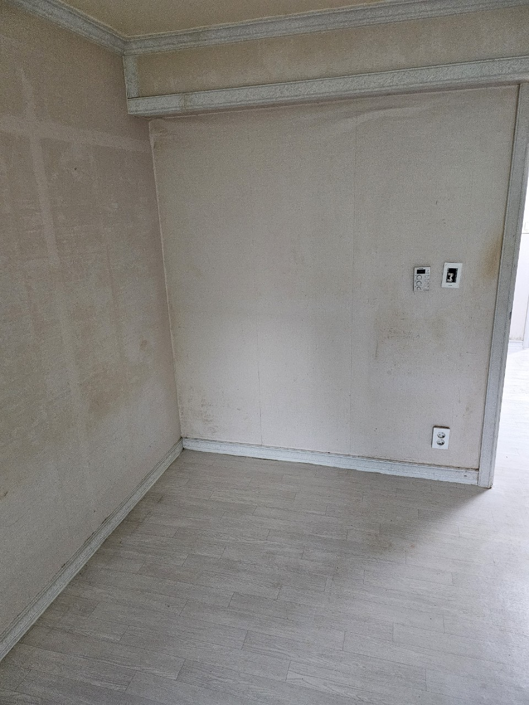
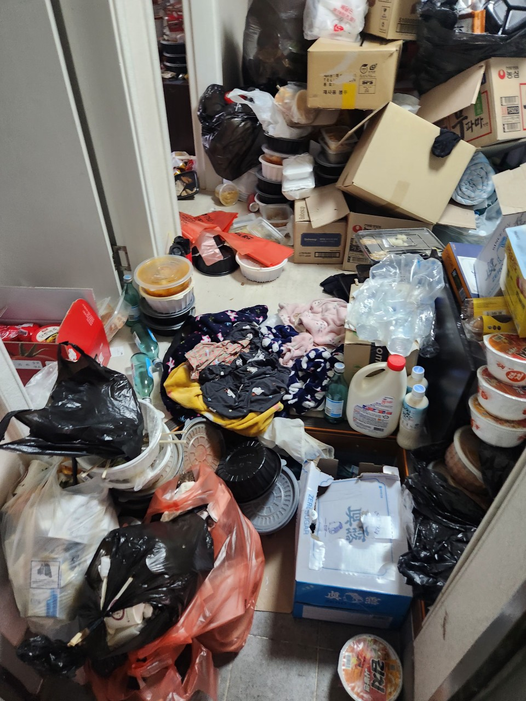
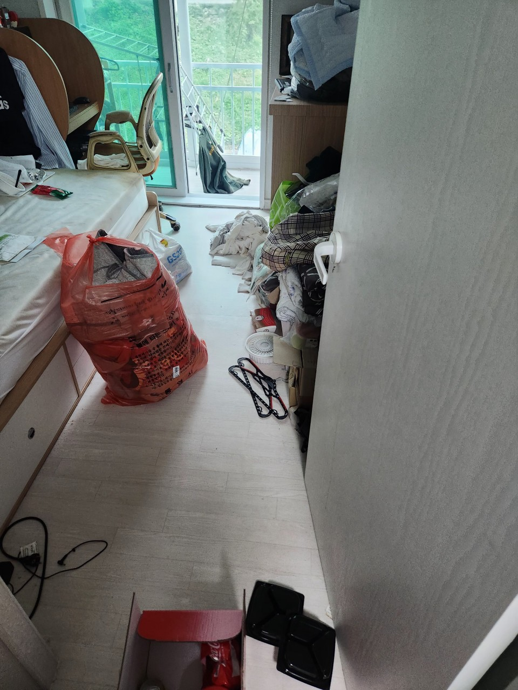

쓰레기집청소
방치된 생활폐기물과 정리하기 어려운 공간을 처리합니다.
구리 지역 방문 가능
구리 쓰레기집청소, 빈집정리, 가정폐기물처리, 이사폐기물처리, 폐업폐기물처리까지 현장 상황에 맞춰 빠르게 상담합니다.

LOCAL SERVICE
구리에서 생활공간이나 사업장을 정리하다 보면 예상보다 많은 폐기물이 발생할 수 있습니다. 오래된 가구, 사용하지 않는 생활용품, 이사 과정에서 나온 짐, 폐업 후 남은 집기류는 혼자 처리하기 어려운 경우가 많습니다.
장기간 방치된 생활폐기물은 악취와 위생 문제를 만들 수 있어 빠른 정리가 중요합니다. 현장 상황에 맞춰 분류, 운반, 상차를 함께 진행합니다.
매매, 임대, 리모델링 전 남아 있는 가구와 생활폐기물을 정리하면 다음 작업이 수월해집니다. 공간 상태와 폐기물 양을 확인한 뒤 작업 방향을 안내합니다.
이사 전후 버릴 물건, 오래된 가구, 생활용품, 대형폐기물 등은 한 번에 정리하는 것이 효율적입니다. 일반폐기물은 30만원부터 시작하며 실제 비용은 양과 현장 조건에 따라 달라집니다.
사무실, 매장, 창고 폐업 후 남은 집기와 폐기물은 종류와 양이 다양합니다. 차량 진입 여부, 층수, 엘리베이터 유무, 분리 작업 난이도에 따라 작업 계획이 달라집니다.
SERVICE
방치된 생활폐기물과 정리하기 어려운 공간을 처리합니다.
비어 있는 집이나 매매·임대 전 공간을 정리합니다.
가구, 생활용품, 대형폐기물을 수거합니다.
이사 전후 불필요한 짐을 한 번에 정리합니다.
업장 정리 후 남은 집기와 폐기물을 처리합니다.
PRICE
일반폐기물은 30만원부터 시작합니다.
정확한 비용은 폐기물 양과 현장 조건 확인 후 안내드립니다.BULKY WASTE FEE
경기도 구리시에서 가구·가전 같은 대형폐기물을 내놓을 때 내는 배출 수수료를 품목별로 정리했습니다. 수수료는 지자체가 정하며 바뀔 수 있으니 배출 전 구리시 신고 화면에서 최종 금액을 확인하세요.
| 품목 | 수수료 | 규격 수 |
|---|---|---|
| 장롱 | 7,000원 ~ 15,000원 | 3개 규격 |
| 침대 | 2,000원 ~ 30,000원 | 13개 규격 |
| 소파 | 2,000원 ~ 18,000원 | 5개 규격 |
| 식탁 | 3,000원 ~ 15,000원 | 6개 규격 |
| 책상 | 2,000원 ~ 7,000원 | 5개 규격 |
| 의자 | 2,000원 ~ 3,000원 | 2개 규격 |
| 안마의자 | 9,000원 | 1개 규격 |
| 서랍장 | 3,000원 ~ 5,000원 | 3개 규격 |
| 책장·책꽂이 | 2,000원 ~ 7,000원 | 4개 규격 |
| 화장대 | 5,000원 ~ 8,000원 | 2개 규격 |
| 신발장 | 4,000원 ~ 5,000원 | 2개 규격 |
| 거실장·장식장 | 3,000원 ~ 10,000원 | 3개 규격 |
| 냉장고 | 3,000원 ~ 15,000원 | 8개 규격 |
| 세탁기 | 3,000원 | 1개 규격 |
| 에어컨 | 3,000원 ~ 8,000원 | 3개 규격 |
| TV | 2,000원 ~ 8,000원 | 6개 규격 |
| 전자레인지 | 무료 | 1개 규격 |
| 피아노 | 5,000원 ~ 15,000원 | 3개 규격 |
| 자전거 | 2,000원 ~ 3,000원 | 2개 규격 |
| 분류 | 품목 | 규격 | 수수료 |
|---|---|---|---|
| 가구류 | 가스레인지 선반 | 모든 규격 | 3,000원 |
| 가구류 | 거울 | 100cm 이하 | 2,000원 |
| 가구류 | 거울 | 150cm 미만 | 3,000원 |
| 가구류 | 거울 | 150cm 이상 | 5,000원 |
| 가구류 | 공간박스 | 2단 이하(가로 40cm 미만) | 1,000원 |
| 가구류 | 공간박스 | 4단 이하(가로 40cm 미만) | 2,000원 |
| 가구류 | 금고 | 소형(50cm×60cm 미만) | 5,000원 |
| 가구류 | 금고 | 중형(60cm×100cm 미만) | 6,000원 |
| 가구류 | 금고 | 대형(70cm×100cm 이상) | 7,000원 |
| 가구류 | 당구대 | 돌 제외 | 20,000원 |
| 가구류 | 대리석식탁 | 식탁 상판 | 7,000원 |
| 가구류 | 대리석식탁 | 6인용 미만 | 10,000원 |
| 가구류 | 대리석식탁 | 6인용 이상 | 15,000원 |
| 가구류 | 레인지대수납장 | 높이 100cm 미만 | 3,000원 |
| 가구류 | 레인지대수납장 | 높이 100cm 이상 | 4,000원 |
| 가구류 | 문갑 | 모든 규격 | 3,000원 |
| 가구류 | 문짝 | 창문 | 3,000원 |
| 가구류 | 문짝 | 목제문 | 4,000원 |
| 가구류 | 문짝 | 철제 현관문 | 5,000원 |
| 가구류 | 블라인드(버티컬) | 1.5m 미만 | 1,000원 |
| 가구류 | 블라인드(버티컬) | 1.5m 이상~3m 미만 | 2,000원 |
| 가구류 | 블라인드(버티컬) | 3m 이상 | 3,000원 |
| 가구류 | 빨래건조대 | 접이식 | 2,000원 |
| 가구류 | 빨래건조대 | 이동식(바퀴) | 3,000원 |
| 가구류 | 서랍장 | 4단 이하 | 3,000원 |
| 가구류 | 서랍장 | 책상용서랍장 | 3,000원 |
| 가구류 | 서랍장 | 5단 이상 | 5,000원 |
| 가구류 | 세면대 | 모든 규격 | 3,000원 |
| 가구류 | 소파류 | 스툴, 등받이(1인 기준) | 2,000원 |
| 가구류 | 소파류 | 소파 1인용 | 3,000원 |
| 가구류 | 소파류 | 소파 2인용 | 5,000원 |
| 가구류 | 소파류 | 소파 3인용 이상 | 7,000원 |
| 가구류 | 소파류 | 돌소파(모든 규격) | 18,000원 |
| 가구류 | 식탁 | 식탁상판 | 3,000원 |
| 가구류 | 식탁 | 6인용 미만 | 4,000원 |
| 가구류 | 식탁 | 6인용 이상 | 5,000원 |
| 가구류 | 신발장 | 높이 1m 미만 | 4,000원 |
| 가구류 | 신발장 | 높이 1m 이상 | 5,000원 |
| 가구류 | 씽크대 | 씽크대 후드 | 2,000원 |
| 가구류 | 씽크대 상판 | 길이 120cm 미만 | 3,000원 |
| 가구류 | 씽크대 상판 | 길이 120cm 이상 | 5,000원 |
| 가구류 | 씽크대 상판 | 대리석 길이 120cm 미만 | 6,000원 |
| 가구류 | 씽크대 상판 | 대리석 길이 120cm 이상 | 8,000원 |
| 가구류 | 씽크대(상,하) | 폭 60cm 미만 | 2,000원 |
| 가구류 | 씽크대(상,하) | 폭 60cm 이상~120cm 미만 | 3,000원 |
| 가구류 | 씽크대(상,하) | 폭 120cm 이상 | 4,000원 |
| 가구류 | 안마의자 | 모든 규격 | 9,000원 |
| 가구류 | 옷걸이(행거 포함) | 모든 규격 | 2,000원 |
| 가구류 | 욕실장식장(수납장) | 모든 규격 | 3,000원 |
| 가구류 | 욕조 | 모든 규격 | 10,000원 |
| 가구류 | 유리판 | 폭 1m 미만 | 2,000원 |
| 가구류 | 유리판 | 폭 1~2m 미만 | 3,000원 |
| 가구류 | 유리판 | 폭 2m 이상 | 4,000원 |
| 가구류 | 유아욕조 | 모든 규격 | 2,000원 |
| 가구류 | 유아침대 | 모든 규격 | 5,000원 |
| 가구류 | 의자류 | 일반, 식탁 의자(1인용 기준) | 2,000원 |
| 가구류 | 의자류 | 사무실(바퀴) 의자 | 3,000원 |
| 가구류 | 장롱 | 90cm 미만 1쪽 | 7,000원 |
| 가구류 | 장롱 | 90cm~120cm 미만 1쪽 | 10,000원 |
| 가구류 | 장롱 | 120cm 이상 1쪽 | 15,000원 |
| 가구류 | 장식장 | 90cm×180cm 미만 | 6,000원 |
| 가구류 | 장식장 | 90cm×180cm 이상 | 10,000원 |
| 가구류 | 좌변기 | 저수조 또는 변기(각각) | 3,000원 |
| 가구류 | 좌변기 | 저수조 및 변기(세트) | 5,000원 |
| 가구류 | 주니어장 | 한쪽문 | 5,000원 |
| 가구류 | 주니어장 | 양쪽문 | 10,000원 |
| 가구류 | 진열장 | 100cm 미만 | 5,000원 |
| 가구류 | 진열장 | 100cm 이상-200cm 미만 | 7,000원 |
| 가구류 | 진열장 | 200cm 이상 | 10,000원 |
| 가구류 | 책꽂이 | 모든 규격(소형) | 2,000원 |
| 가구류 | 책상 | 책상 상판(모든 규격) | 2,000원 |
| 가구류 | 책상 | 컴퓨터 책상 | 3,000원 |
| 가구류 | 책상 | H형(상판+책장/서랍별도) | 7,000원 |
| 가구류 | 책상(양편) | 대형(유리별도) | 7,000원 |
| 가구류 | 책상(편수) | 소형(유리별도) | 4,000원 |
| 가구류 | 책장 | 높이 또는 폭(큰쪽) 1.2m 미만 | 3,000원 |
| 가구류 | 책장 | 높이 또는 폭(큰쪽) 1.2m~2m 미만 | 5,000원 |
| 가구류 | 책장 | 높이 또는 폭(큰쪽) 2m 이상 | 7,000원 |
| 가구류 | 칠판(게시판) | 100cm 미만 | 2,000원 |
| 가구류 | 칠판(게시판) | 100cm 이상 | 3,000원 |
| 가구류 | 침대 | 1인용 침대헤드, 밑받침 | 2,000원 |
| 가구류 | 침대 | 유아용 매트리스 | 3,000원 |
| 가구류 | 침대 | 유아용 침대틀 | 3,000원 |
| 가구류 | 침대 | 2인용 침대헤드, 밑받침 | 3,000원 |
| 가구류 | 침대 | 1인용 매트리스(싱글, 청소년) | 5,000원 |
| 가구류 | 침대 | 1인용 침대틀 | 5,000원 |
| 가구류 | 침대 | 2인용 침대틀 | 7,000원 |
| 가구류 | 침대 | 2인용 매트리스(더블, 퀸) | 8,000원 |
| 가구류 | 침대 | 의료용 침대 | 15,000원 |
| 가구류 | 침대 | 2층 침대 | 20,000원 |
| 가구류 | 침대 | 돌침대 1인용 | 20,000원 |
| 가구류 | 침대 | 돌침대 2인용 | 30,000원 |
| 가구류 | 칸막이(파티션) | 폭 120cm 미만 | 2,000원 |
| 가구류 | 칸막이(파티션) | 폭 120cm 이상 | 3,000원 |
| 가구류 | 캐비닛 | 철재 | 4,000원 |
| 가구류 | 콘솔 | 모든 규격 | 3,000원 |
| 가구류 | 탁구대 | 1대 | 14,000원 |
| 가구류 | 탁자 | 응접실용 | 3,000원 |
| 가구류 | 탁자 | 회의용 | 6,000원 |
| 가구류 | 텔레비전 받침 | 폭 100cm 미만 | 2,000원 |
| 가구류 | 텔레비전 받침 | 폭 100cm 이상-200cm 미만 | 3,000원 |
| 가구류 | 텔레비전 받침 | 폭 200cm 이상 | 4,000원 |
| 가구류 | 파일캐비닛 | 3단 이하 | 3,000원 |
| 가구류 | 파일캐비닛 | 4단 이상 | 4,000원 |
| 가구류 | 판넬 | 공사용 | 4,000원 |
| 가구류 | 평상 | 1.5m × 1.5m 미만 | 5,000원 |
| 가구류 | 평상 | 1.5m × 1.5m 이상 | 7,000원 |
| 가구류 | 화장대 | 폭 120cm 미만 | 5,000원 |
| 가구류 | 화장대 | 폭 120cm 이상 | 8,000원 |
| 가전제품류 | 가스오븐레인지 | 높이 1m 이상 | 4,000원 |
| 가전제품류 | 공기청정기 | 높이 1m 이상 | 4,000원 |
| 가전제품류 | 김치냉장고 | 300L 미만 | 3,000원 |
| 가전제품류 | 김치냉장고 | 300L 이상 | 5,000원 |
| 가전제품류 | 김치냉장고 | 500L 이상 | 7,000원 |
| 가전제품류 | 난로(팬히터) | 33㎡형 이상 | 5,000원 |
| 가전제품류 | 냉장고 | 300L 미만 | 4,000원 |
| 가전제품류 | 냉장고 | 업소용 300L 미만(소) | 6,000원 |
| 가전제품류 | 냉장고 | 300L 이상 | 6,000원 |
| 가전제품류 | 냉장고 | 500L 이상 | 8,000원 |
| 가전제품류 | 냉장고 | 업소용 300L 이상(대) | 15,000원 |
| 가전제품류 | 노래방기계 | 모니터 | 4,000원 |
| 가전제품류 | 노래방기계 | 앰프 | 4,000원 |
| 가전제품류 | 발지압기 | 모든 규격 | 2,000원 |
| 가전제품류 | 변압기 | 모든 규격 | 2,000원 |
| 가전제품류 | 복사기 | 모든 규격 | 7,000원 |
| 가전제품류 | 비데 | 모든 규격 | 2,000원 |
| 가전제품류 | 선풍기 | 대형 | 3,000원 |
| 가전제품류 | 세탁기 | 모든 규격 | 3,000원 |
| 가전제품류 | 스피커 | 60cm 이상(개당) | 5,000원 |
| 가전제품류 | 식기건조기 | 모든 규격 | 2,000원 |
| 가전제품류 | 식기세척기 | 모든 규격 | 4,000원 |
| 가전제품류 | 에어컨(온풍기) | 66㎡ 미만 | 3,000원 |
| 가전제품류 | 에어컨(온풍기) | 66㎡ 이상 | 5,000원 |
| 가전제품류 | 에어컨(온풍기) | 264㎡ 이상 | 8,000원 |
| 가전제품류 | 오디오 | 오디오 케이스 | 4,000원 |
| 가전제품류 | 오디오 | 대형 이상 | 5,000원 |
| 가전제품류 | 오락기 | 높이 60cm 미만 | 4,000원 |
| 가전제품류 | 오락기 | 높이 60cm~120cm 미만 | 5,000원 |
| 가전제품류 | 오락기 | 높이 120cm 이상 | 10,000원 |
| 가전제품류 | 옥매트(자석요) 온수매트 | 1인용 | 4,000원 |
| 가전제품류 | 옥매트(자석요) 온수매트 | 2인용 | 6,000원 |
| 가전제품류 | 자동판매기 | 소형(전용기) | 5,000원 |
| 가전제품류 | 자동판매기 | 대형(복합기) | 10,000원 |
| 가전제품류 | 전기장판 | 1인용 | 2,000원 |
| 가전제품류 | 전기장판 | 2인용 | 3,000원 |
| 가전제품류 | 정수기 | 스탠드형 | 4,000원 |
| 가전제품류 | 청소기 | 대형(업소용) | 3,000원 |
| 가전제품류 | 커피메이커 | 모든 규격 | 2,000원 |
| 가전제품류 | 컴퓨터 | 모니터 | 2,000원 |
| 가전제품류 | 타자기 | 모든 규격 | 2,000원 |
| 가전제품류 | 텔레비전 | 24인치 미만(LED,LCD,UHD) | 2,000원 |
| 가전제품류 | 텔레비전 | 25인치 미만(브라운관) | 3,000원 |
| 가전제품류 | 텔레비전 | 24-42인치(LED,LCD,UHD) | 4,000원 |
| 가전제품류 | 텔레비전 | 25인치 이상(브라운관) | 5,000원 |
| 가전제품류 | 텔레비전 | 42-64인치(LED,LCD,UHD) | 6,000원 |
| 가전제품류 | 텔레비전 | 64인치 이상(LED,LCD,UHD) | 8,000원 |
| 가전제품류 | 헬스기구 | 스텝퍼 | 3,000원 |
| 가전제품류 | 헬스기구 | 헬스자전거(가정용) | 6,000원 |
| 가전제품류 | 헬스기구 | 러닝머신 | 9,000원 |
| 가전제품류 | 환풍기 | 모든 규격 | 2,000원 |
| 그밖의류 | 가방 | 일반용 | 2,000원 |
| 그밖의류 | 가방 | 여행용, 골프용 | 3,000원 |
| 그밖의류 | 가정용 운동매트 | 모든 규격 | 2,000원 |
| 그밖의류 | 간판 | 입간판 | 4,000원 |
| 그밖의류 | 간판 | 60cm×180cm 미만 | 5,000원 |
| 그밖의류 | 간판 | 60cm×180cm 이상 | 8,000원 |
| 그밖의류 | 개집 | 모든 규격 | 4,000원 |
| 그밖의류 | 고무통 | 지름 50cm 미만 | 2,000원 |
| 그밖의류 | 고무통 | 지름 50cm 이상 100cm 미만 | 3,000원 |
| 그밖의류 | 고무통 | 지름 100cm 이상 | 4,000원 |
| 그밖의류 | 골프채 | 개당 | 1,000원 |
| 그밖의류 | 관악기,현악기,기타 | 모든 규격 | 2,000원 |
| 그밖의류 | 놀이매트, 퍼즐매트 | 1.8m×1.8m당 | 1,000원 |
| 그밖의류 | 도마 | 모든 규격 | 2,000원 |
| 그밖의류 | 돗자리 | 모든 규격 | 2,000원 |
| 그밖의류 | 드럼통 | 모든 규격 | 5,000원 |
| 그밖의류 | 뜀틀 | 모든 규격 | 4,000원 |
| 그밖의류 | 라켓, 스틱류 | 개당 | 500원 |
| 그밖의류 | 물탱크 | 1톤당 | 10,000원 |
| 그밖의류 | 미끄럼틀 | 유아용 | 5,000원 |
| 그밖의류 | 바둑판 | 접이식 | 1,000원 |
| 그밖의류 | 바둑판 | 원목 | 2,000원 |
| 그밖의류 | 밥상 | 5인용 미만 | 2,000원 |
| 그밖의류 | 밥상 | 5인용 이상 | 3,000원 |
| 그밖의류 | 방석 | 1인용 | 1,000원 |
| 그밖의류 | 방석 | 2인용 이상 | 2,000원 |
| 그밖의류 | 방충망 | 모든 규격 | 2,000원 |
| 그밖의류 | 배기후드 | 모든 규격 | 2,000원 |
| 그밖의류 | 베개 | 1인용 | 1,000원 |
| 그밖의류 | 베개 | 2인용 이상 | 2,000원 |
| 그밖의류 | 벽시계 | 60cm 미만 | 2,000원 |
| 그밖의류 | 벽시계 | 60cm 이상 | 3,000원 |
| 그밖의류 | 병풍 | 모든 규격 | 3,000원 |
| 그밖의류 | 보일러 | 모든 규격 | 4,000원 |
| 그밖의류 | 보일러기름통 | 모든 규격 | 3,000원 |
| 그밖의류 | 보행기 | 모든 규격 | 2,000원 |
| 그밖의류 | 볼링공 | 모든 규격 | 2,000원 |
| 그밖의류 | 세단기 | 모든 규격 | 5,000원 |
| 그밖의류 | 소화기(대형) | 10kg 이상 | 13,000원 |
| 그밖의류 | 소화기(소형) | 3.3kg 이하 | 2,000원 |
| 그밖의류 | 소화기(중형) | 3.3kg 초과 ~ 10kg 미만 | 4,000원 |
| 그밖의류 | 수도호스 | 10m당 | 1,000원 |
| 그밖의류 | 수족관 | 60cm 이하 | 2,000원 |
| 그밖의류 | 수족관 | 120cm 미만 | 5,000원 |
| 그밖의류 | 수족관 | 한 변 120cm 이상 | 7,000원 |
| 그밖의류 | 스노보드 | 모든 규격 | 3,000원 |
| 그밖의류 | 스케이트 | 모든 규격 | 2,000원 |
| 그밖의류 | 스키부츠 | 모든 규격 | 2,000원 |
| 그밖의류 | 스키세트 | 모든 규격 | 3,000원 |
| 그밖의류 | 쌀통 | 일반 | 2,000원 |
| 그밖의류 | 쌀통 | 다용도 | 3,000원 |
| 그밖의류 | 아기 바운서 | 모든 규격 | 2,000원 |
| 그밖의류 | 아이스박스 | 30L 미만 | 1,000원 |
| 그밖의류 | 아이스박스 | 30L 이상~50L 미만 | 2,000원 |
| 그밖의류 | 아이스박스 | 50L 이상 | 3,000원 |
| 그밖의류 | 액자 | 50cm 미만 | 1,000원 |
| 그밖의류 | 액자 | 1m 미만 | 2,000원 |
| 그밖의류 | 액자 | 1m 이상 | 3,000원 |
| 그밖의류 | 우산 | 모든 규격 | 1,000원 |
| 그밖의류 | 유모차 | 1인용 | 2,000원 |
| 그밖의류 | 유모차 | 2인용 | 3,000원 |
| 그밖의류 | 유아용 자동차 | 모든 규격 | 2,000원 |
| 그밖의류 | 유아용 전동차 | 모든 규격 | 3,000원 |
| 그밖의류 | 이동식 화장실 | 오물통 | 20,000원 |
| 그밖의류 | 이동식 화장실 | 본체 | 30,000원 |
| 그밖의류 | 이동식 화장실 | 전체 | 50,000원 |
| 그밖의류 | 이불 | 소(하절기) | 1,000원 |
| 그밖의류 | 이불 | 대(동절기) | 2,000원 |
| 그밖의류 | 자전거 | 어린이용 | 2,000원 |
| 그밖의류 | 자전거 | 성인용 | 3,000원 |
| 그밖의류 | 장난감 | 긴쪽 100cm 미만 | 2,000원 |
| 그밖의류 | 장난감 | 긴쪽 100cm 이상 | 3,000원 |
| 그밖의류 | 장판 | 3m 이하 | 2,000원 |
| 그밖의류 | 장판 | 5m 이하 | 3,000원 |
| 그밖의류 | 재봉틀 | 모든 규격 | 4,000원 |
| 그밖의류 | 전동킥보드 | 성인용 | 4,000원 |
| 그밖의류 | 조명기구 | 1m 미만 | 1,000원 |
| 그밖의류 | 조명기구 | 1m 이상 | 2,000원 |
| 그밖의류 | 조명기구 | 샹들리에 | 2,000원 |
| 그밖의류 | 체중계 | 모든 규격 | 2,000원 |
| 그밖의류 | 카시트(유아용) | 모든 규격 | 3,000원 |
| 그밖의류 | 카펫 | 150cm 미만 | 4,000원 |
| 그밖의류 | 카펫 | 210cm 미만 | 6,000원 |
| 그밖의류 | 카펫 | 210cm 이상 | 8,000원 |
| 그밖의류 | 캣타워 | 높이 1m 미만 | 3,000원 |
| 그밖의류 | 캣타워 | 높이 1m 이상 | 5,000원 |
| 그밖의류 | 쿠션 | 모든 규격 | 2,000원 |
| 그밖의류 | 킥보드 | 어린이용 | 2,000원 |
| 그밖의류 | 타이어 | 승용차 | 2,000원 |
| 그밖의류 | 타이어 | 트럭, 버스 | 3,000원 |
| 그밖의류 | 텐트 | 4인용 이하 | 3,000원 |
| 그밖의류 | 텐트 | 5인용 이상 | 4,000원 |
| 그밖의류 | 파라솔 | 모든 규격 | 3,000원 |
| 그밖의류 | 피아노 | 디지털피아노(건반) | 5,000원 |
| 그밖의류 | 피아노 | 오르간, 풍금, 디지털피아노 | 10,000원 |
| 그밖의류 | 피아노 | 일반피아노 | 15,000원 |
| 그밖의류 | 항아리 | 50cm 미만 | 2,000원 |
| 그밖의류 | 항아리 | 50cm 이상 | 3,000원 |
| 그밖의류 | 화물 운반대(팰릿) | 100cm 미만 | 3,000원 |
| 그밖의류 | 화물 운반대(팰릿) | 100cm 이상 | 4,000원 |
| 그밖의류 | 화분 | 모든 규격 | 2,000원 |
| 그밖의류 | 화환 | 모든 규격 | 3,000원 |
| 그밖의류 | 휠체어 | 모든 규격 | 3,000원 |
| 봉투에 담기 어려운 폐기물 | 깨진 유리, 스티로폼, 폐목재, 이사, 집수리, 정원 손질 등으로 일시에 대량 배출되는 잔재물 | 10L | 1,000원 |
| 봉투에 담기 어려운 폐기물 | 깨진 유리, 스티로폼, 폐목재, 이사, 집수리, 정원 손질 등으로 일시에 대량 배출되는 잔재물 | 20L | 2,000원 |
| 소형폐가전 수수료 면제 대상 품목 | 가스레인지(모든 규격) | 무료 | |
| 소형폐가전 수수료 면제 대상 품목 | 가스오븐렌지(높이 1m 미만) | 무료 | |
| 소형폐가전 수수료 면제 대상 품목 | 가습기(모든 규격) | 무료 | |
| 소형폐가전 수수료 면제 대상 품목 | 공기청정기(높이 1m 미만) | 무료 | |
| 소형폐가전 수수료 면제 대상 품목 | 난로(팬히터) 33㎡형 미만 | 무료 | |
| 소형폐가전 수수료 면제 대상 품목 | 노트북컴퓨터(모든 규격) | 무료 | |
| 소형폐가전 수수료 면제 대상 품목 | 녹즙기(모든 규격) | 무료 | |
| 소형폐가전 수수료 면제 대상 품목 | 다리미(모든 규격) | 무료 | |
| 소형폐가전 수수료 면제 대상 품목 | 드라이기(모든 규격) | 무료 | |
| 소형폐가전 수수료 면제 대상 품목 | 믹서기(모든 규격) | 무료 | |
| 소형폐가전 수수료 면제 대상 품목 | 비디오(모든 규격) | 무료 | |
| 소형폐가전 수수료 면제 대상 품목 | 선풍기(가정용) | 무료 | |
| 소형폐가전 수수료 면제 대상 품목 | 스피커(60cm 미만) | 무료 | |
| 소형폐가전 수수료 면제 대상 품목 | 오디오(중소형) | 무료 | |
| 소형폐가전 수수료 면제 대상 품목 | 전기밥솥밥통(모든 규격) | 무료 | |
| 소형폐가전 수수료 면제 대상 품목 | 전자레인지(모든 규격) | 무료 | |
| 소형폐가전 수수료 면제 대상 품목 | 전화기(모든 규격) | 무료 | |
| 소형폐가전 수수료 면제 대상 품목 | 정수기(탁상형) | 무료 | |
| 소형폐가전 수수료 면제 대상 품목 | 청소기(가정용) | 무료 | |
| 소형폐가전 수수료 면제 대상 품목 | 카세트(모든 규격) | 무료 | |
| 소형폐가전 수수료 면제 대상 품목 | 컴퓨터 본체 | 무료 | |
| 소형폐가전 수수료 면제 대상 품목 | 컴퓨터 자판 | 무료 | |
| 소형폐가전 수수료 면제 대상 품목 | 컴퓨터 프린터 | 무료 | |
| 소형폐가전 수수료 면제 대상 품목 | 탈수기(모든 규격) | 무료 | |
| 소형폐가전 수수료 면제 대상 품목 | 토스터기(모든 규격) | 무료 | |
| 소형폐가전 수수료 면제 대상 품목 | 팩스기기(모든 규격) | 무료 |
구리 대형폐기물, 직접 옮기기 어려우신가요? 사진만 보내주시면 바로 견적을 드립니다.
전화상담 010-4393-2414DETAIL GUIDE
경기 구리 폐기물처리는 단순히 물건을 치우는 작업이 아니라 현장 구조와 폐기물 종류, 운반 동선, 차량 진입 가능 여부를 함께 확인해야 하는 작업입니다. 같은 폐기물이라도 아파트, 빌라, 단독주택, 상가, 사무실, 창고 등 현장 조건에 따라 작업 방식과 비용이 달라질 수 있습니다.
생활폐기물이 오랜 기간 쌓인 공간은 악취와 위생 문제가 함께 발생할 수 있습니다. 경기 구리 쓰레기집청소는 폐기물 분류, 포장, 운반, 상차까지 한 번에 진행하는 것이 중요합니다. 특히 혼자 정리하기 어려운 양이거나 엘리베이터 사용이 제한되는 현장은 작업 전 상담이 필요합니다.
빈집정리는 매매, 임대, 리모델링, 이사 준비 과정에서 많이 필요합니다. 오래된 가구, 침대, 서랍장, 생활용품, 잡동사니 등이 남아 있으면 다음 입주나 공사 진행이 늦어질 수 있습니다. 경기 구리 가정폐기물처리는 물건의 양과 종류를 확인한 뒤 적절한 차량과 인원을 배치해 진행합니다.
이사 전후에는 평소보다 많은 불필요한 짐이 나옵니다. 오래된 가전, 사용하지 않는 가구, 파손된 물품, 계절용품 등이 대표적입니다. 이사 일정에 맞춰 폐기물을 미리 정리하면 새 공간으로 이동하는 과정이 훨씬 수월해집니다.
매장, 사무실, 창고 폐업 후에는 업종에 따라 다양한 폐기물이 발생합니다. 책상, 의자, 진열대, 선반, 집기류, 포장재 등은 양이 많고 부피가 커 일반적인 배출만으로는 처리하기 어렵습니다. 경기 구리 폐업폐기물처리는 현장 확인 후 작업 인원과 차량을 정해 진행하는 것이 안전합니다.
일반폐기물은 30만원부터 시작하지만 실제 비용은 폐기물의 양, 층수, 엘리베이터 유무, 차량 진입 가능 여부, 분리 작업 난이도, 작업 시간에 따라 달라집니다. 사진 상담을 통해 대략적인 안내가 가능하며, 양이 많거나 현장 구조가 복잡한 경우에는 추가 확인이 필요할 수 있습니다.
SEARCH Q&A
검색·상담에서 자주 묻는 내용을 올바른 폐기물처리 기준으로 정리했습니다.
구리에서 폐기물처리 업체를 찾을 때는 비용과 함께 사진 상담, 반출·상차 포함 여부, 층수·엘리베이터·차량 진입까지 안내하는지를 확인하는 것이 좋습니다. 올바른 폐기물처리는 교문·수택·인창 등 주거 밀집과 상가 현장이 가까운 구리 현장에서 쓰레기집청소, 빈집정리, 가정·이사·폐업폐기물처리를 상담합니다. 일반폐기물은 30만원부터 안내합니다.
구리 쓰레기집청소 비용은 쌓인 양, 오염·악취 정도, 층수, 엘리베이터, 반출 동선에 따라 달라집니다. 같은 면적이라도 고층이거나 대형 가구가 많으면 작업 인원과 시간이 늘어날 수 있습니다. 방·거실 전체 사진과 주소를 보내주시면 대략적인 범위를 안내해 드립니다.
구리 빈집정리는 매각·임대·리모델링·상속 전 공실에 가구와 생활폐기물이 남아 있을 때 필요합니다. 남은 짐을 혼자 옮기기 어렵거나, 일정에 맞춰 한 번에 비워야 할 때 올바른 폐기물처리에 상담하시면 정리와 반출을 함께 진행할 수 있습니다.
이사 날짜가 정해졌다면 가능하면 며칠 전에 사진과 주소를 남겨 주시는 것이 좋습니다. 구리 지역도 일정·차량 여유에 따라 당일·익일 상담이 가능한 경우가 있으며, 급한 일정은 희망 날짜를 함께 말씀해 주시면 맞춰 안내합니다.
생활폐기물·가구·가전 분류, 운반, 상차, 현장 마무리까지 상담 범위에 포함됩니다. 쓰레기집청소, 빈집정리, 가정폐기물, 이사폐기물, 폐업폐기물 모두 구리 현장 조건에 맞춰 진행합니다. 자세한 과정은 구리 작업후기와 상담으로 확인하실 수 있습니다.
LOCAL FAQ
일반폐기물은 30만원부터 시작합니다. 실제 비용은 폐기물 양, 층수, 엘리베이터 유무, 차량 진입 여부에 따라 달라집니다.
가능합니다. 생활폐기물 정리, 포장, 운반, 상차까지 현장 상황에 맞춰 진행합니다.
가능합니다. 전체 공간 사진, 폐기물 양, 건물 입구와 엘리베이터 여부를 함께 보내주시면 더 빠르게 안내할 수 있습니다.
매매, 임대, 리모델링, 이사 전후로 남은 가구와 생활폐기물을 정리할 때 필요합니다.
사무실, 매장, 창고, 소형 업장 등 다양한 현장 상담이 가능합니다. 집기류와 폐기물 양에 따라 비용이 달라집니다.
비용뿐 아니라 사진 상담, 반출·상차 포함 여부, 현장 동선 설명, 일정 조율 가능 여부를 함께 확인하세요. 올바른 폐기물처리는 구리 현장을 30만원부터 상담합니다.
차량·인원 일정에 따라 가능합니다. 사진과 주소, 희망 날짜를 남겨주시면 당일·익일 가능 여부를 안내합니다.
가능합니다. 가구·가전·생활용품·이사 잔짐을 한 현장에서 함께 정리·반출하는 경우가 많습니다.
PHOTO
작업 전·중·후 현장을 단계별로 확인할 수 있습니다.


REVIEW
구리 현장에서 진행한 쓰레기집청소, 빈집정리, 가정·이사·폐업폐기물처리 작업후기를 확인할 수 있습니다.
작업 전·후 현장 사진과 정리 과정을 구리 작업후기 페이지에서 확인하세요.
사진을 준비해두시면 더 빠르게 안내받을 수 있습니다.